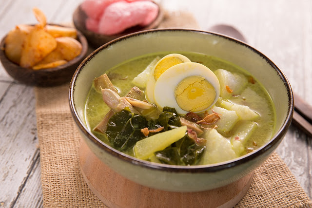

Lontong Sayur
Lontong Sayur adalah masakan Indonesia yang terbuat dari kue beras yang dipadatkan dan biasanya disajikan dengan kari santan yang diolah dengan pepaya muda, tahu rebus kedelai, dan telur rebus. Makanan ini dapat ditemukan hampir di mana-mana di seluruh nusantara dan setiap daerah memiliki resep khasnya masing-masing.
Bahan-bahan yang perlu Anda siapkan adalah:
- 3 sendok makan minyak sayur
- 2 lembar daun salam
- 500 gram daging sapi, pilih potongan untuk rebusan, potong-potong seukuran gigitan
- 4 labu siam, kupas, buang bijinya, dan potong dadu
- 500 gram kacang ular, potong 1 inci
- 2 liter santan encer (atau pakai 7 gelas air + 1 kaleng santan)
- 2 sendok makan kecap ikan
- 2 sendok makan gula palem
- Sedikit garam
Cara Membuat Lontong Sayur :
- 1. Panaskan minyak dalam panci, lalu tumis bumbu halus dan daun salam.
- 2. Tambahkan daging sapi dan masak.
- 3. Tambahkan labu siam dan buncis. Masak hingga sayuran mulai layu.
- 4. Tambahkan santan, kecap ikan, dan gula palem. Didihkan.
- 5. Kecilkan api dan masak hingga daging empuk. Anda bisa menambahkan lebih banyak air mendidih. Usahakan cairannya maksimal 2 liter.
- 6. Tambahkan sedikit gula palem dan garam. Matikan api.
- 7. Sajikan hangat.